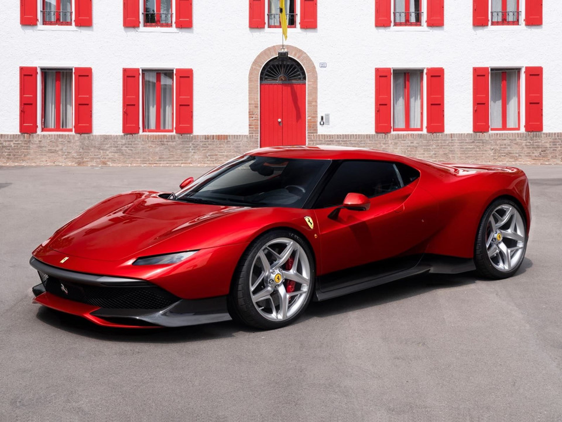
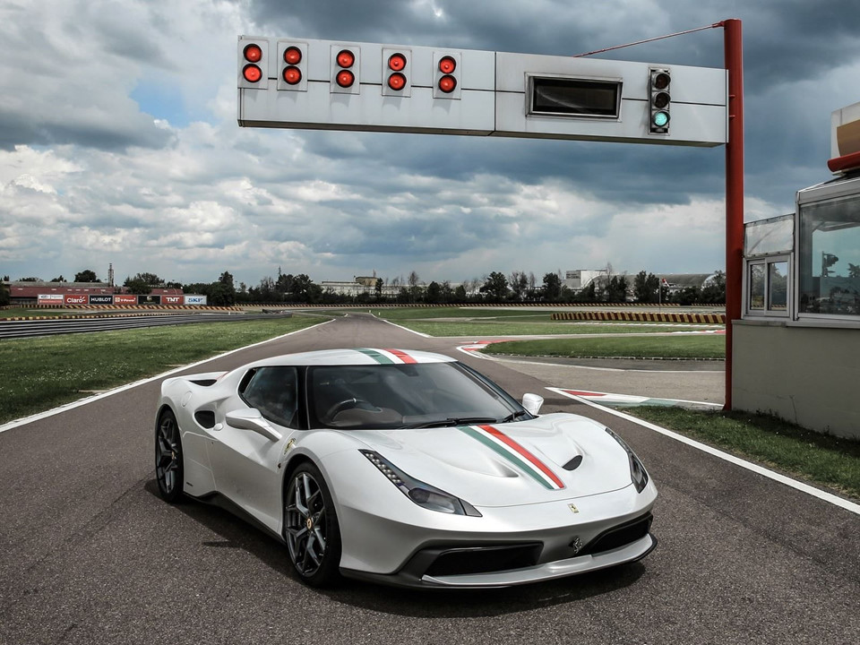
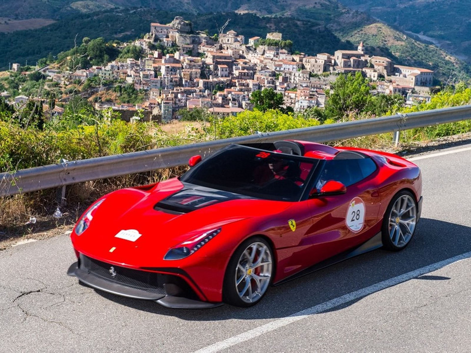
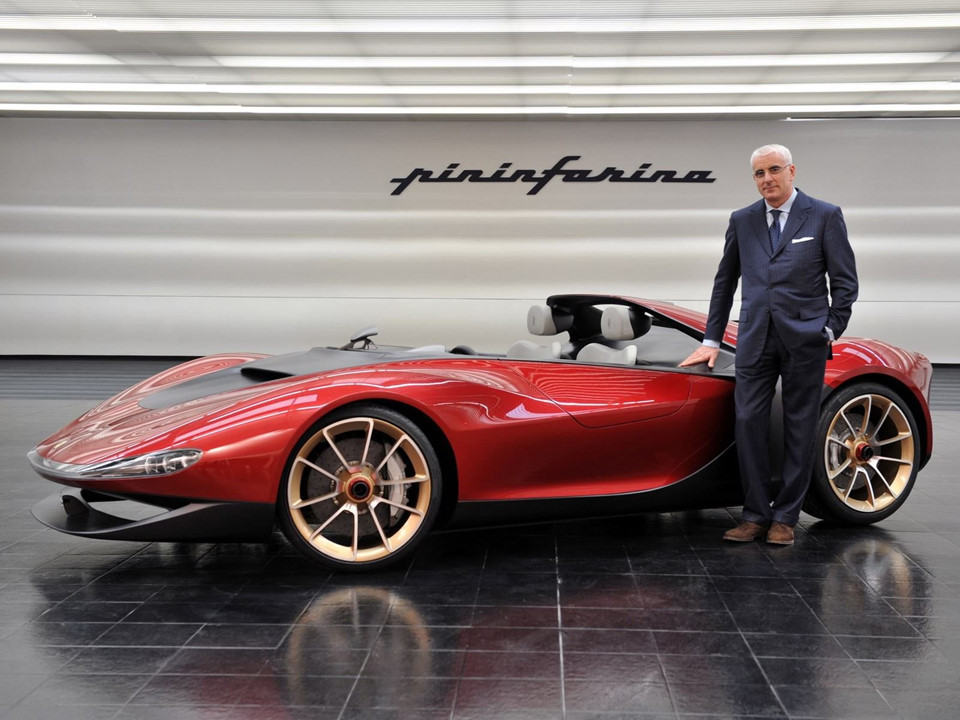
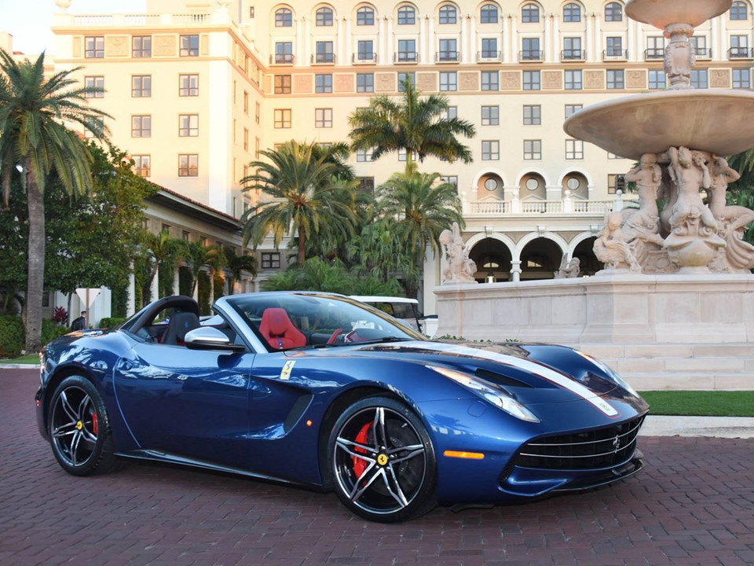

5 siêu xe Ferrari bản đặc biệt đẹp nhất
Ferrari thường sản xuất những mẫu xe bản đặc biệt với số lượng giới hạn, giá đắt đỏ nhằm kỷ niệm kỷ nguyên siêu xe của mình, hoặc tri ân các khách hàng thân thiết của hãng.
1. Ferrari SP38
Là chiếc Ferrari mới nhất được sản xuất thông qua chương trình "one-off" của thương hiệu Italia. Ferrari SP38 dựa trên nền tảng của chiếc Ferrari 488, được sản xuất dành cho một trong những khách hàng thân thiết nhất của hãng, nhưng không tiết lộ danh tính. Ferrari SP38 sở hữu động cơ giống hệt với GTB 488, trái tim V8 twin-turbo 3,9 lít tạo ra công suất 660 mã lực, dẫn động bánh sau thông qua hộp số tự động ly hợp kép.

2. Ferrari 458 MM Speciale
Một chiếc Ferrari thuộc chương trình "one-off" của Ferrari, 458 MM Speciale được ra mắt vào năm 2016 trông khá giống Ford GT. Động cơ thừa hưởng từ chiếc 458 Speciale, kiểu dáng đặc trưng của MM bao gồm phần mái nổi lấy cảm hứng từ Ferrari GTO 1984, sơn Bianco Italia với sọc Italia, các khe hút khí độc đáo giống với 488 GTB.

3. Ferrari F12 TRS
Được giới thiệu lần đầu tiên năm 2010 tại triển lãm xe Paris Motor Show, Sesto Elemento được trang bị khối động cơ V10 dung tích 5.2 lít sản sinh công suất 570 mã lực, mô-men xoắn cực đại 540 Nm, đi kèm với hộp số 6 cấp, hệ dẫn động 4 bánh toàn thời gian. Siêu xe hiếm của Lamborghini có khả năng tăng tốc từ 0-100 km/h trong 2,5 giây trước khi đạt vận tốc tối đa 320 km/h.Sesto Elemento được sản xuất tại trụ sở chính của Lamborghini ở Sant’Agata. Đây cũng là nơi hãng xe Italia dành riêng để sản xuất những siêu xe có số lượng giới hạn như Reventon hay Veneno.Ngoại thất của Sesto Elemento không chỉ sở hữu kiểu dáng ấn tượng, mà còn được làm bằng sợi carbon đặc biệt, rất nhẹ nhưng cũng rất chắc chắn. Chính vì thân xe có nhiều chi tiết làm từ sợi carbon nên trọng lượng chỉ ở mức 999 kg, mang lại tỷ lệ cân nặng/sức mạnh ở mức 1,75 kg/1 mã lực.

4. Ferrari Pininfarina Sergio
Chiếc xe đặc biệt này lần đầu ra mắt dưới dạng concept vào năm 2013, được xây dựng trên nền tảng của Spider 458. Phiên bản thương mại với tên gọi Ferrari Sergio được sản xuất vào năm 2015 chỉ với 6 chiếc. Mẫu xe này ra đời để kỷ niệm Sergio Pininfarina sau cái chết của ông, giá bán của xe liên tục tăng. Lần cuối cùng được bán, chiếc xe có giá lên tới 5 triệu USD.

5. Ferrari F12 TDF
Là một trong những chiếc Ferrari đẹp nhất gần đây, chiếc F12 TDF là phiên bản cuối cùng của F12 Berlinetta trước khi mẫu xe này thay thế, đóng vai trò như một mẫu thử nghiệm công nghệ có thể được đưa vào chiếc Super 8 8F. Tên gọi của chiếc xe nhằm kỷ niệm cuộc đua xe hơi Tour de France, nơi Ferrari nhiều lần chiến thắng. Chiếc F12 TDF trang bị động cơ V12 6,3 lít dẫn động bánh sau. Nó cũng nhẹ hơn 110 kg so với F12 Berlinetta. Chỉ 799 chiếc được sản xuất trên toàn thế giới.
